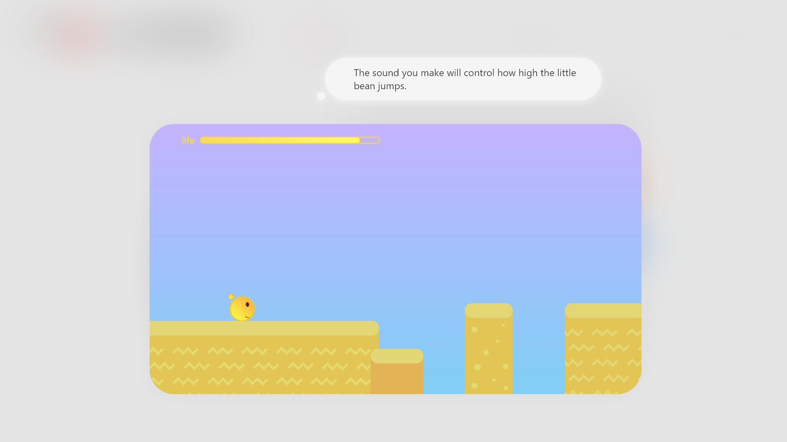
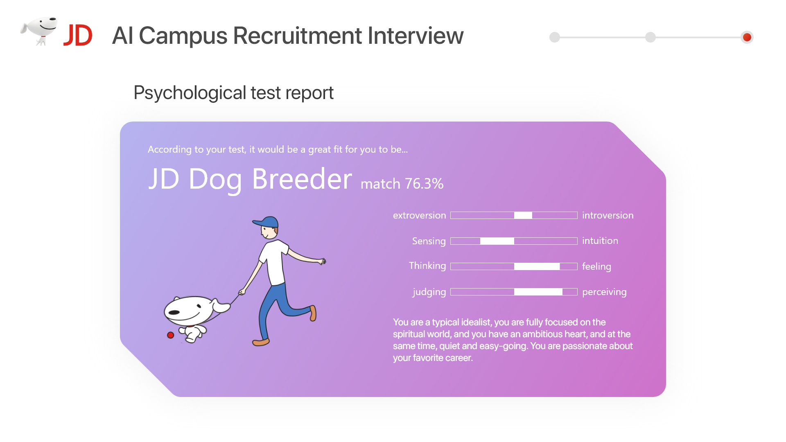
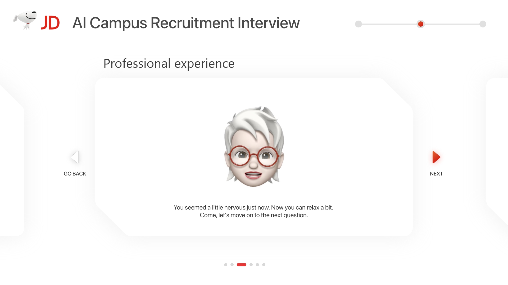
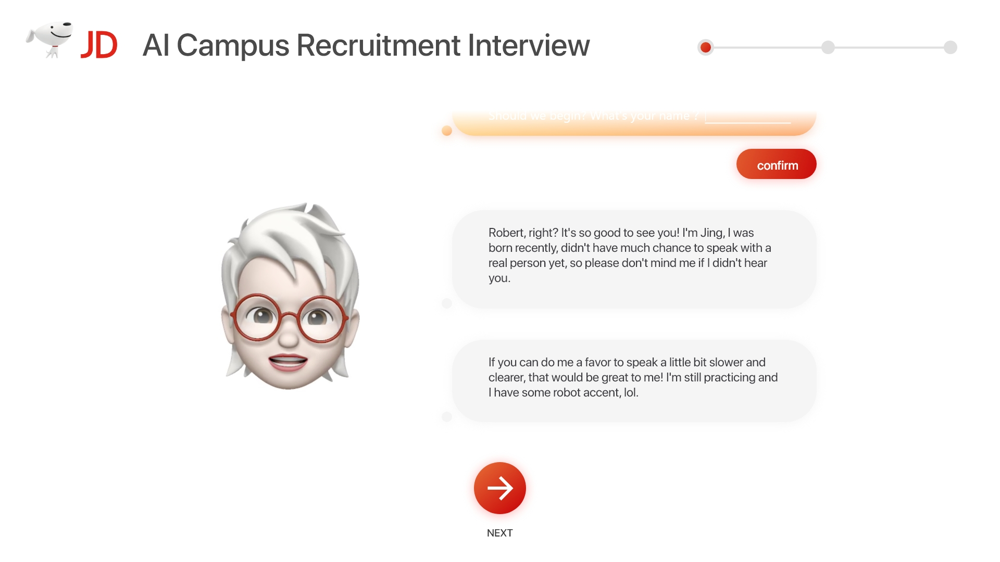
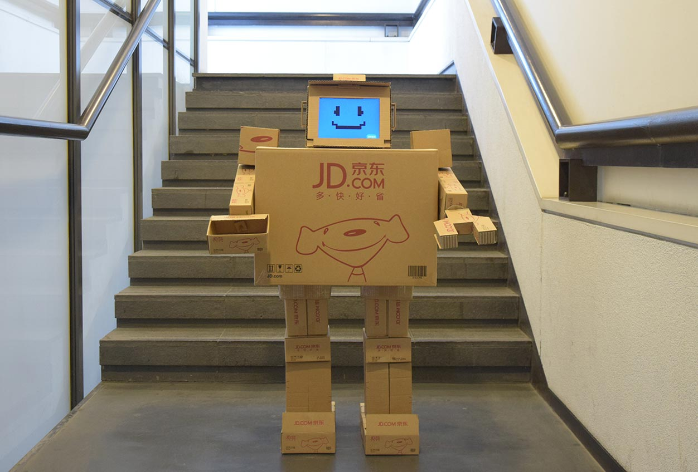
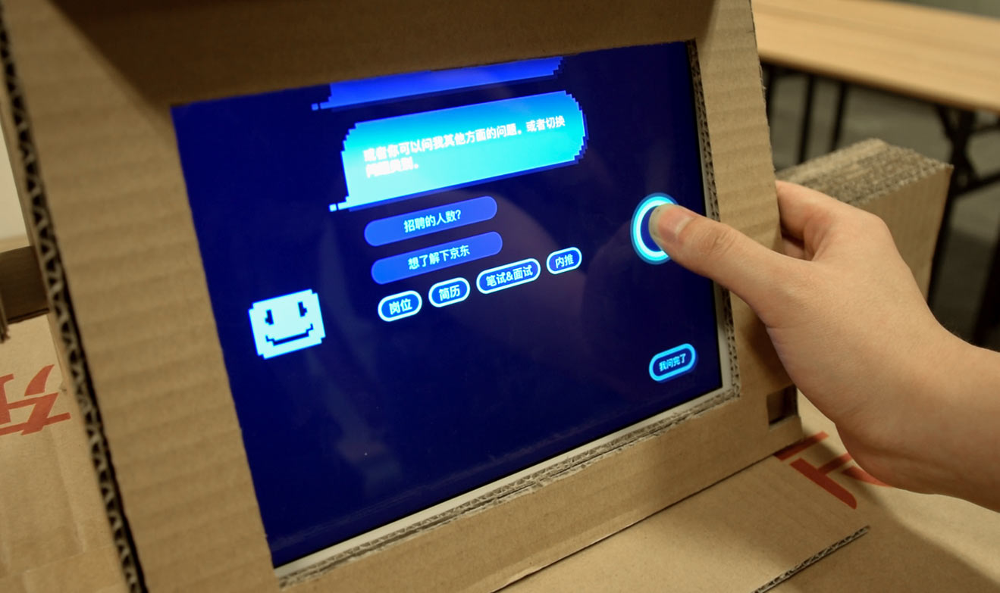
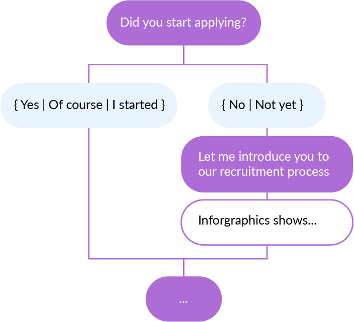
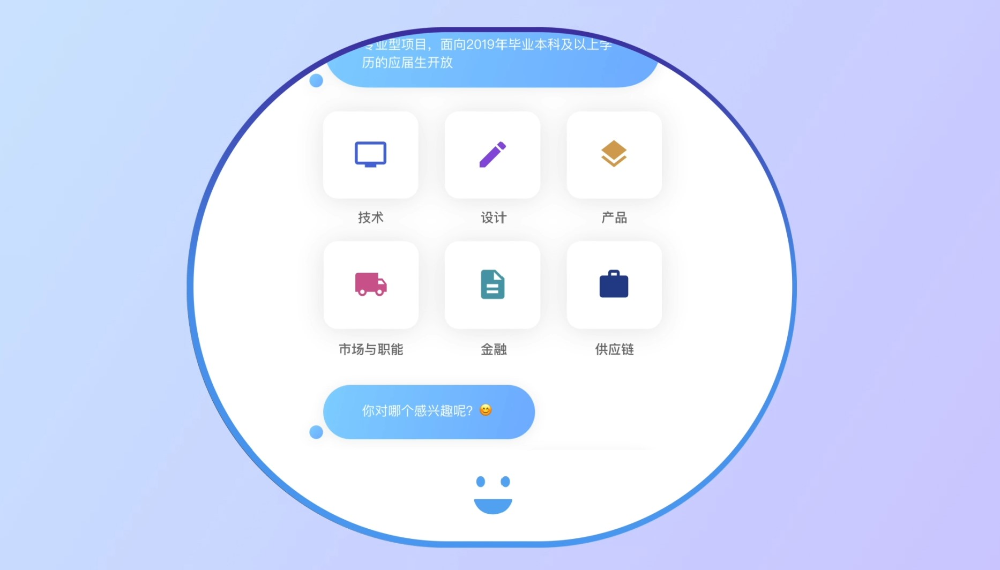
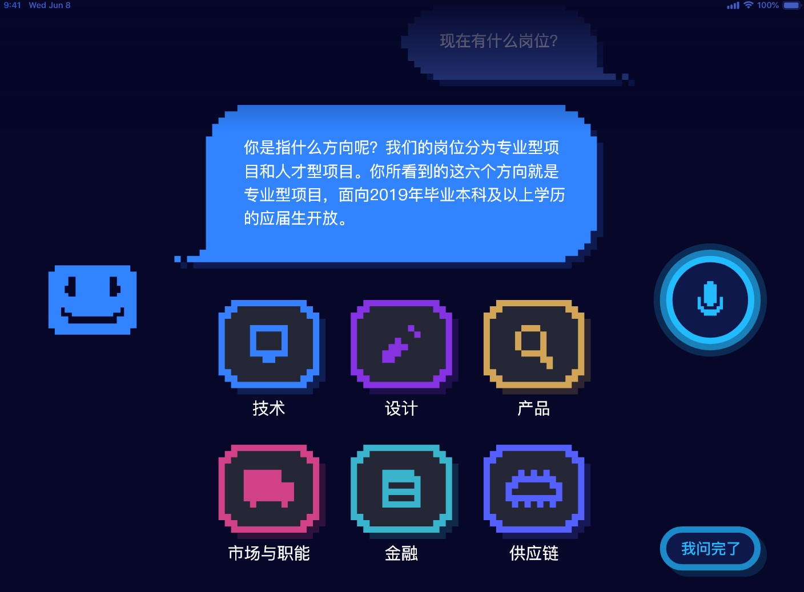

AI robot for campus recruitment
Jun 2018 – Aug 2018
Summer internship @AI Innovation Lab, JD.com, Inc.
Beijing, China
Skills
Voice User Interface Design, UX/UI, User Research
Role
design leader, UX/UI designer, user researcher, motion designer
This project was conducted when I intern at JD.com, one of the online retailer giants in China. When we launched this project, the AI Lab of JD.com has just been found, and the whole department is lack of employees, especially designers. Because of this situation, I got the chance to be the design lead in this project, I cooperated with other designers and programmers to finalize the final product.
The goal of the project is mainly about creating an effortless and delightful AI interview experience for students by using a limited Natural Language Processing (NLP) technology which is still under development.
Using natural language processing technology, I designed an online interviewer for interview practice and an AI robot for campus recruitment. In an effort to make the tense interview process more relaxing, I designed a humorous and non-threatening personality for the HR Robot which give the interviewees a delightful experience during the conversation flow and a pressure-free feeling when they first encounter the AI HR Robot.
I led four members of the team to two universities (according to the HR department, these two universities are the top two resources of JD's employees who's been recruited in Beijing area) in Beijing to conduct face-to-face user interviews with nearly 50 students. According to the content of the interview, I sorted out the following insights:
Considering the fact that the current AI technology is still primitive which can only realize limited semantic recognition, combined with insights from the survey, we decided to design an online HR interviewer and an HR robot.
The AI HR interviewer is mainly used for an online interview during the campus recruitment months. With the AI HR interviewer, they don't need to bother interview prospective employees one by one that doubles their effort in the past.
Finally, when the interview is finished. I designed a simplified version of the MBTI psychological test to match interviewees with the best positions with a sense of humor, thus reducing the psychological burden for interviewee after the interview.
Finally, when the interview is finished. I designed a simplified version of the MBTI psychological test to match interviewees with the best positions with a sense of humor, thus reducing the psychological burden for interviewee after the interview.
The NLP technology I used was still very basic which mainly analyzes the language by searching the keywords. In such a case, I intentionally lower users' exception by designing a "humble" personality for the AI robot.
The AI HR robot is designed for campus recruitment events, in which students usually want to learn a lot about the job position and company information and also send their CVs. With this robot, HRs don't need to answer questions especially those been repetitively asked.
Using JD's recycled cardboard, I designed a robot that can be easily assembled and disassembled.
The robot's face has five different states, including confusion, sleepy, smiling, talking, and blinking, and would be displayed depending on the stage of the conversation. (e.g. When the robot doesn't talk to users for some time, the sleepy face would be shown)
Users can chat with the robot not only by talking but also by touching on the screen which is designed as the robot's face and also a user interface through that users can easily review conversation history that is presented as conversation bubbles.
When the conversation ends, users can download the conversation history to their mobile phone for subsequent review by scanning the QR code on the screen.

In order to realize an intelligent conversation experience in the case of limited NLP technology, I designed the entire dialogue flow. The functional dialogue mainly includes core, skip, bridge and chatter.
The core section contains topics that are frequently asked by users at campus recruitment events.
The skip and bridge sections are used to jump between different functional sections through keyword recognition.
The chatter is the section that makes the conversation more interesting.
Skip example:
In an effort to make the user interface and robot appearance looks consistent with the overall style of the cardboard, I used a pixelated user interface style.
before:
after:
